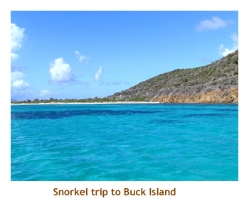
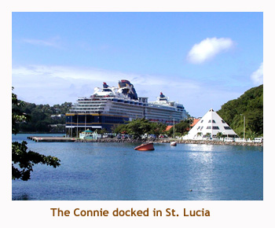
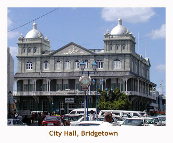
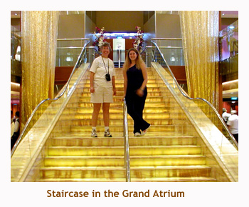
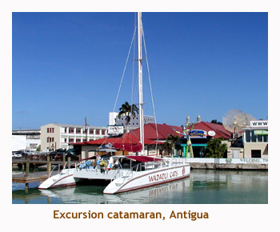
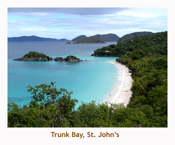
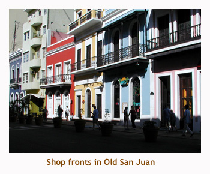

[ Home ] [ Travel ] [ Photography ] [ Pets ] [ Games] [ Rowing] [ Physics ]


Cruising on the Constellation
Travel
Cruises
Past Cruises (Diaries)
Future Cruises
Rogues Galleries
Land Trips
Diaries (Land Trips)
Hawai'i - Big Island - 04'01
Hawai'i - Maui - 05'02
Hawai'i - Big Island - 04'03
Hawai'i - Kaua'i - 09'04
Hawai'i - Big Island - 04'06
Hawai'i - Maui - 04'06
Mainland China - 05'07
Phoenix, Arizona - 12'07
Greek Isles - 05'08
Hawai'i - Kaua'i - 09'08
Hawai'i - Big Island - 09'09
Hawai'i - Maui - 05'12
Hawai'i - Big Island - 04'13
Ireland - 08'13
Mexico - Cancun 11'13
France/Belgium/Lux 07'15
Hawai'i - Big Island - 05'17
England / Wales - 06'17
Hawai'i - Big Island - 09'19
Photography
Cameras
Underwater
Pets
Tara
Blackie
Whitey
Muffy
Ollie
Rusty
Fluffy
Rufus&Dufus
Games
Rowing
Physics
Rating (out of 5): Ship  Food
Service
Itinerary
Food
Service
Itinerary
For our third cruise, we decided on doing a Southern Caribbean itinerary.
We hadn't tried Celebrity before, and the Constellation was their newest
ship. We booked an outside cabin, but the prices on the balconies were
reduced 3 times, and eventually went for less than our outside cabin.
So, we switched to a balcony PLUS got a small rebate. Can't beat that.!
The only problem with leaving from San Juan is that you can't get a direct
flight and the flights are very expensive. This was a family cruise as
our daughter Christina, and Marj's sister Joan and brother-in-law Dave
came with us.
Pre-Cruise (Nov 28/29) - Enjoying Old San Juan
The Wyndam Hotel wasn't the greatest, but it was convenient. We also
met some Cruise Critic friends there, so that was nice. We all went for
dinner at a Brazilian restaurant. I don't think everyone liked the spicy
food, but we had a good time there.
Day 1 (Nov 30) - Boarding in San Juan
We stayed at the Wyndam Hotel, mainly because it was literally across the street from the cruise ships. However, our ship was docked across the harbour at another dock so had to take a taxi. We embarked around noon, so had plenty of time to hit the buffet for lunch and then explore the ship. Our room was very nice, with a great balcony. The room had a small loveseat that pulled out into a bed for Chrissy. Even though there were 3 of us in the cabin, it didn't seem cramped at all.
We decided to do the fitness center "open house". A fitness instructor met us and explained that he was going to show us how all the equipment worked. It sounded great, as the large gym had treadmills, steppers, bikes, ellipticals, ergs, and weight lifting stations. However, he took us into another room and went through all the pay-per-use "fake" fitness equipment like the fat pod and other contraptions that make you fit by just lying there. Yeah, right! And that was the tour! No chance of learning how to use the free equipment.
After the ubiquitous lifeboat drill, we explored the ship some more and
then went to our early dining. It was just the 5 of us at the table (table
for 6), so we didn't get to meet any new friends at dinner. One of our
wait staff was hilarious and we really enjoyed him throughout the cruise.
Day 2 (Dec 1) - St. Croix, USVI
 As usual, we were up on deck at 6 AM to watch us arrive at St. Croix. We were one of the last ships to go there, as the cruise lines have been dropping this port. There isn't much to see or do on this island, so I can understand it. We docked at Frederiksted, which was mainly closed or boarded up shops. Our excursion took us across island to Christiansted, where we boarded a boat to Buck Island for a snorkel. The snorkelling was pretty good, the highlight being some beautiful squid (which we hadn't experienced in Hawai'i).
After the snorkel, we returned to the ship and relaxed for the afternoon.
I felt sorry for the residents of the island. There was a lot of poverty,
and the loss of the cruise ship business must have been devistating.
Day 3 (Dec 2) - Castries, St. Lucia
 We arrived early in the morning at Castries. It is an interesting docking site as it parallels the airport landing strip. The cruise ships and aircraft actually have to coordinate their schedules so that they don't interfere with each other. We didn't book an excursion in St. Lucia, so we just walked around the town. We encountered some very primitive living areas that were just plywood shacks with corrugated tin roofs. This must be one of the poorer countries in the Caribbean.
In the afternoon, I just relaxed on the ship while the ladies went ashore again to check out the shopping.
Later I went to the gym to do some rowing. The gym is on the top deck at the front of the ship. While
on the rowing machine, I had a sweeping vista of the port of Castries. Ah, this is the life!
Day 4 (Dec 3) - Bridgetown, Barbados
 We docked in Barbados to the sound of a steel drum band playing Christmas Carols. Somehow it just didn't feel like Christmas with no snow! Chrissy headed off with a friend to do a horseback excursion, but Marj and I just walked around the town. The downtown area was very busy - lots of traffic and business people.
In the afternoon, I stayed on the ship to do my gym workout and read, while the others headed into
town for some shopping. All day long we were serenaded with steel drum carols. Actually, I kind of liked it.
Day 5 (Dec 4) - A Day At Sea
 A day at sea gave us a chance to explore the ship. I think that the Constellation is my favorite ship. It is very new, and the art work and wood finishing is fantastic. Although ever ship / cruise line we've tried has been very nice, Celebrity Cruises provides an experience that suits us better than any of the other cruise lines. I love classical music, so the live string quartet, harpist, guitarest or pianist is really great. The service is a touch above as well, with waiters assiting you from the buffet line to your table. The food presentation is excellent too, with interesting vegetable purees, and lemon wedges in cheesecloth (no pits in your food!).
To support my digital camera, I always bring my laptop along. I can offload my photos from the camera,
look at them on a full size screen, and burn them to a CD as we go. I also bring some movies with me to
watch after doing my gym workout. The laptop is really handy.
Day 6 (Dec 5) - St. Johns, Antigua
 We arrived at Antigua at sunrise. We had booked a catamaran / snorkel trip, so headed off the ship first thing. The catamaran (Wadadli Cats) was terrific and had lots of room for everyone. We headed to a snorkel site which was pretty good. Then out came the rum punch and we headed to a secluded beach. Heading back to the ship, the punch was flowing and the passengers formed an endless "congo line". Lots of fun.
After popping back to the ship, we headed back into the town to shop for t-shirts. It is so nice to be able to pop back into the
air conditioned ship after a hot day. Another Celebrity touch - ice cold wash cloths are handed out as you board the ship.
Very nice!
Day 7 (Dec 6) - Charlotte Amalie, St. Thomas, USVI
 Once again, an early arrival just after sunrise. Not too many people up on deck at this hour, but it always seems to be the same ones. Once an early riser, always an early riser. We had booked a snorkel excursion on the island of St. John. Although you can cab it to Red Hook Harbour and ferry across to St. John, our tour picked us up by boat right at the ship. We traversed the south side of St. Thomas (passing Michael Jordan's home) and then boarded an open air tram on St. John that took us to Trunk Bay. The snorkelling was very interesting. An underwater path had been laid out with signs and directions. Just like doing a trail in the forest.
After returning to the ship for lunch, we headed back into town to do some shopping. There were outdoor
Christmas trees and carol music - so out of place in a tropical location. St. Thomas must be the jewelry capital of the world.
Lots of good deals, but we're not into jewelry so didn't partake.
Day 8 (Dec 7) - San Juan and Home
 Far too quickly we were back in San Juan getting ready for our flight home. The disembarkation from the ship went fairly quickly. We did the cruise line transfer to the airport and then waited 4 hours or so for our flight.
Overall, it was a really great cruise. We enjoyed every port and the days at sea. Celebrity is clearly the ultimate "mass market" cruise line. The ship, the service, the food were all exceptional. The biggest things we miss on Celebrity are the laundry facilities and the Personal Choice dining option offered on Princess. Can't wait until we cruise Celebrity again.